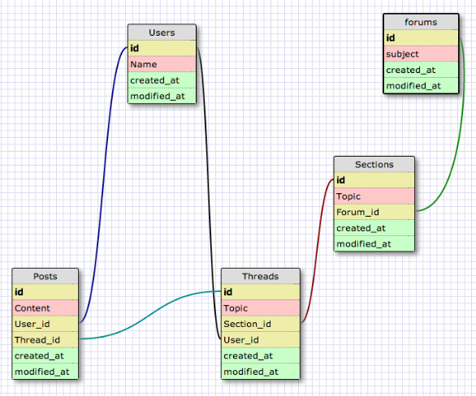
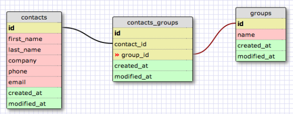

Overview
We spent today working on schemas and commands in SQLite. One thing that I've realized as I've been working with SQLite is the importance of workflow. People have different ways in which they plan out databases, but I like to first imagine the UI view of my application and then figure out the schema that way. All relationships between tables in databases can be summed up as three different types.
- One to One
- One to Many
- Many to Many
There is a correlation between one object and another. You would join the primary keys of each object together.
There is a correlation between one object and many instances of another object. You would take the primary key of the one object and link it to a foreign key in a many object. Take a look at the example below.
Many to Many relationships are just two distinct one to many relationships with a controller in the middle. Take a look at the example below.
